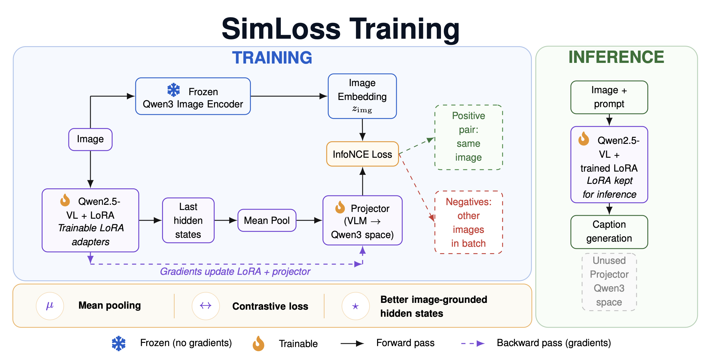
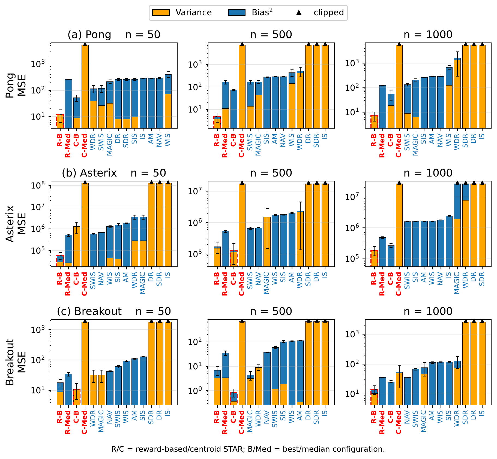
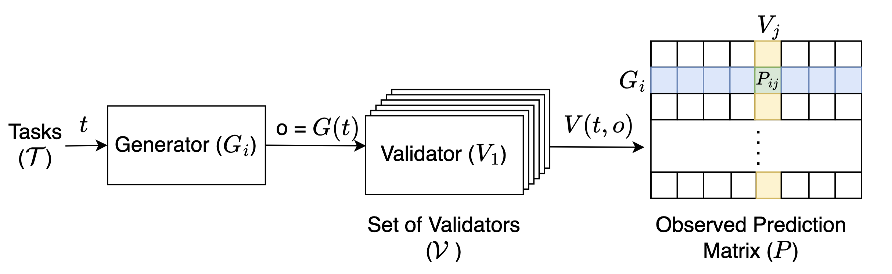
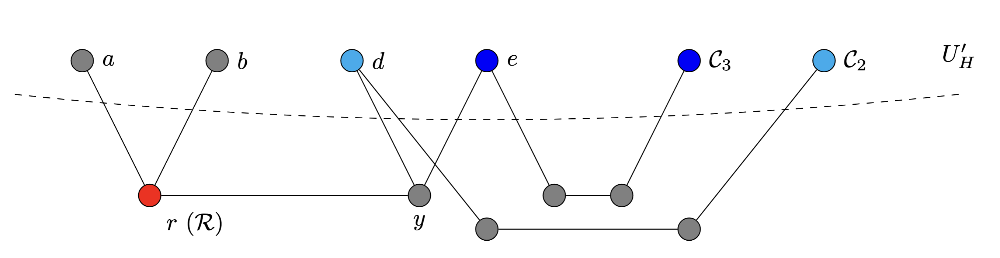
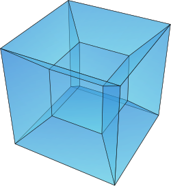
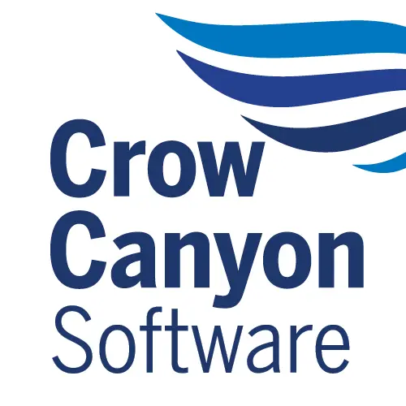

Machine Learning Intern
- Building time-series forecasting models for inventory prediction using Temporal Fusion Transformers and N-HiTS.
|
|
M.S. Computer Science, 2025–2027 (expected)
B.Tech in Computer Science, 2021–2025 |
|

Zero-shot Fine-grained Image Captioning with VLAs
Under submission to AAAI 2027
A zero-shot approach to fine-grained image captioning built on vision-language-action (VLA) models, producing detailed, object-level descriptions in a single pass while matching the quality of multi-pass pipelines at a fraction of their cost and latency. Manuscript under submission; available upon request. 
Fantastic φ's and Where to Find Them: Reward-Based Abstractions for
STAR
In preparation, 2026
Introduces reward-based φ-function state abstractions for the STAR estimator, enabling low-variance, low-bias off-policy evaluation that outperforms importance-sampling and model-based baselines across RL environments. Manuscript under submission; available upon request. 
Beyond Consensus: Mitigating the
Agreeableness Bias in LLM Judge Evaluations
arXiv, 2025
We introduce an optimal minority-veto strategy that is resilient to missing data and mitigates this bias to a large extent. For scenarios requiring even higher precision, we propose a novel regression-based framework that directly models the validator bias using a small set of human-annotated ground truth data. On a challenging code feedback task over 366 high-school Python programs, our regression approach reduces the maximum absolute error to just 1.2%, achieving a 2x improvement over the best-performing ensemble of 14 state-of-the-art LLMs. 
A bound for the cops and robber
problem in terms of 2-component order connectivity
arXiv, 2024
Provide a bound on the cop number of graphs in terms of their 2-component order connectivity. 
From Data Completion to Problems on
Hypercubes: A Parameterized Analysis of the Independent Set Problem*
arXiv, 2024
Paper shows that fixed-parameter tractability cannot be extended to capture all FO-definable problems. It answers this question by showing that FO model checking on induced subgraphs of hypercubes is as difficult as FO model checking on general graphs. |
Machine Learning Intern
Student Researcher
 Machine Learning Intern
ML & Software Engineering Intern
Visiting Researcher — LLM-Judge Bias
|